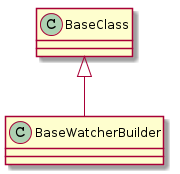
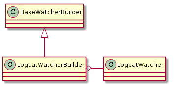
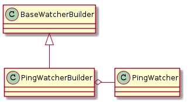
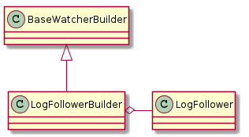

Log Watcher Builder¶
A module to build logwatchers.

| LogwatcherBuilderError | An error to raise if the configuration is un-buildable |

| BaseWatcherBuilder(node, parameters, output) | A class to base other builders on | ||
| BaseWatcherBuilder.arguments |
|
||
| BaseWatcherBuilder.output_file |
|

| LogcatWatcherBuilder(*args, **kwargs) | A builder of logcat watchers | ||
| LogcatWatcherBuilder.arguments |
|
||
| LogcatWatcherBuilder.buffers |
|
||
| LogcatWatcherBuilder.product |
|
| LogWatcherBuilder(*args, **kwargs) | A builder of log watchers | ||
| LogWatcherBuilder.product |
|

| PingWatcherBuilder(*args, **kwargs) | A builder of ping watchers | ||
| PingWatcherBuilder.arguments | |||
| PingWatcherBuilder.target | Hostname to ping | ||
| PingWatcherBuilder.threshold | Consecutive failed pings to consider a failure | ||
| PingWatcherBuilder.product |
|

| LogFollowerBuilder(*args, **kwargs) | A builder of log followers | ||
| LogFollowerBuilder.product |
|